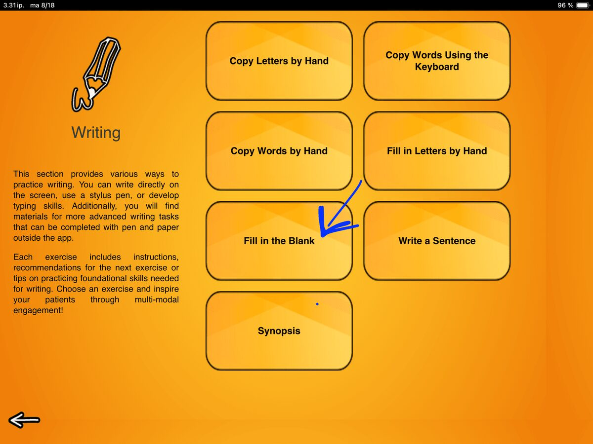
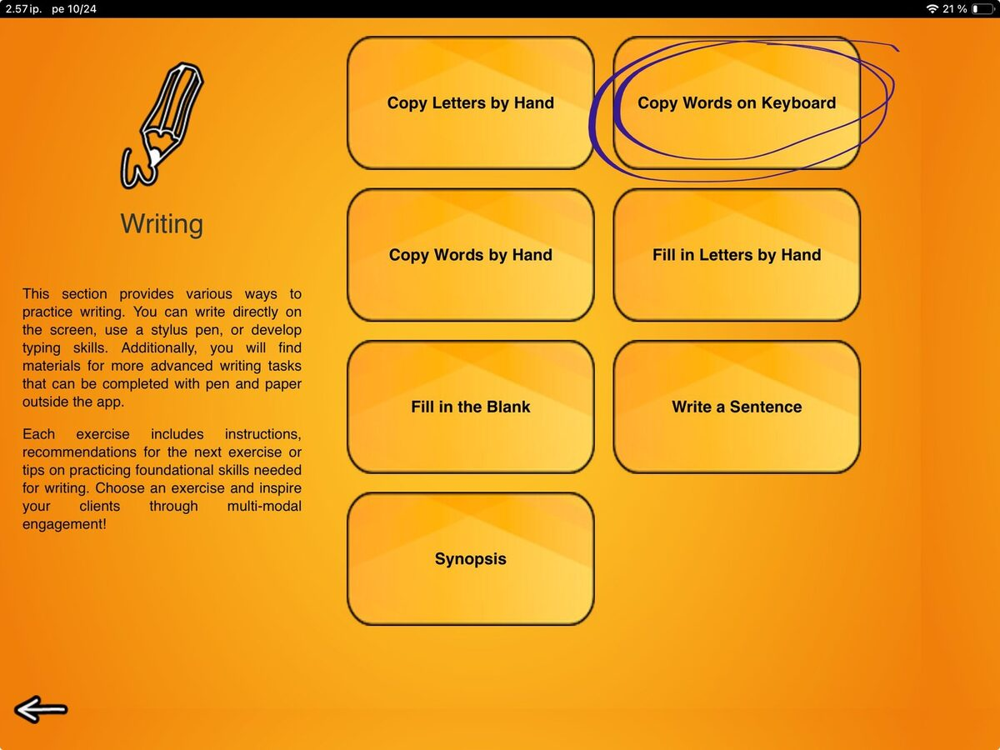
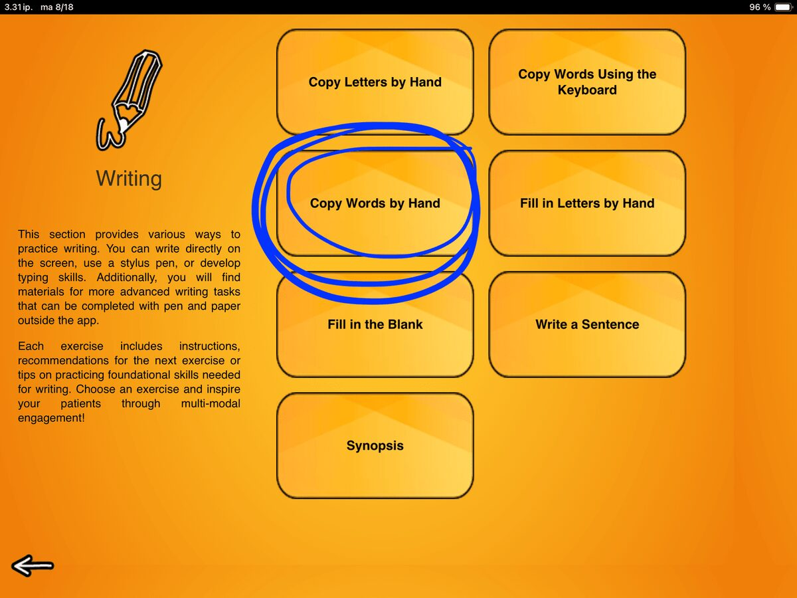
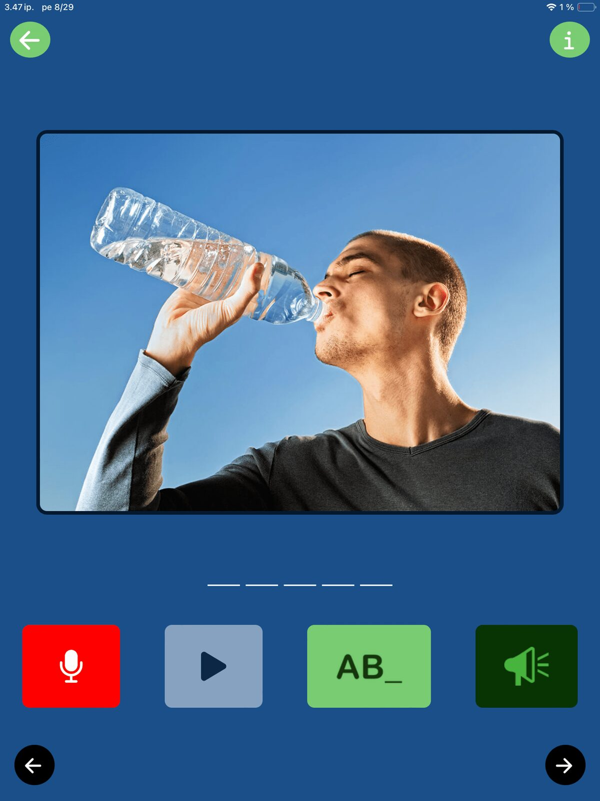
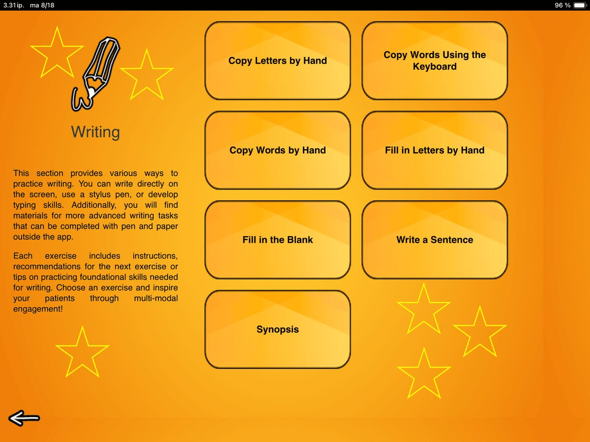
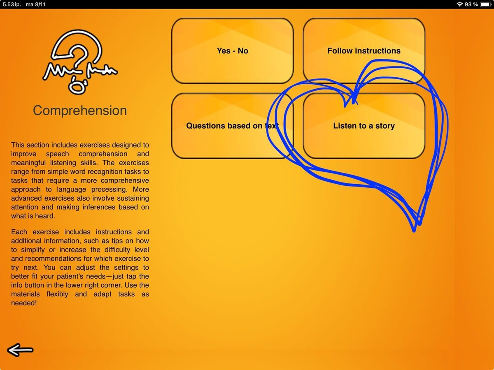
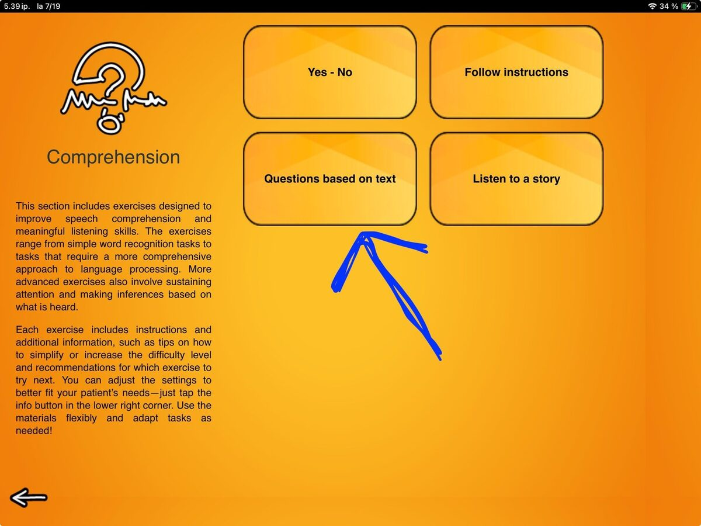
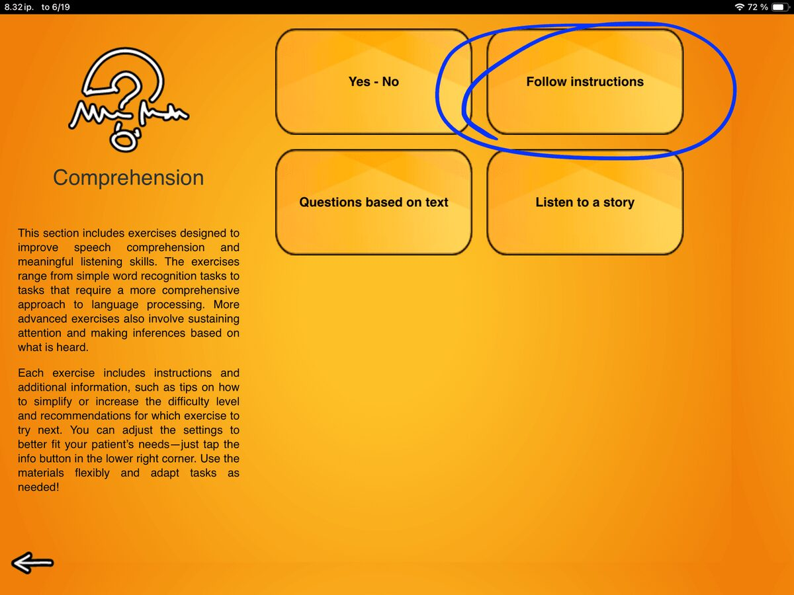

Blog
All The Things I Love About Speech Therapy With Adults

Fill in the Blank This exercise takes those word-level typing skills from Copy a Word and puts them to work.
Copy Words on Keyboard, a little bit about digital devices in rehabilitation and one very scary beast Our next exercise in the Writing category takes us from writing by hand to typing. If you’ve been following along, you know where we’re coming from. If not, I invite you to scroll back to the earlier posts and find out! Missing Letters
The third exercise in our Writing category is Fill in Letters by Hand. If this looks familiar, you are not seeing double.
Missing Letters
The third exercise in our Writing category is Fill in Letters by Hand. If this looks familiar, you are not seeing double.

The Logical Next Step in Writing In our last post about SanapsisPro Writing category updates, we looked at Copy Letters by Hand.
The Importance of User Feedback Let’s turn our attention to Sanapsis+ for a moment. This is the app designed for patients to practice their language skills independently.
Update for the Writing category is live Head over to the App Store to explore new content and enjoy an improved user experience in exercises:
Listen to a Story – Non-Fiction Stories for Auditory Reasoning The fourth exercise in the Comprehension category is called Listen to a Story. If you’ve already used Questions Based on Text, this task might feel familiar.
Questions Based on Text - two levels, two ways to use the exercise Questions Based on Text is a listening exercise designed to support extracting information and deductive reasoning. The exercise has two modes to choose from: Questions and Yes-No statements.
Follow Instructions – Updated and Ready to Use The second exercise in the refreshed Comprehension category is Follow Instructions.